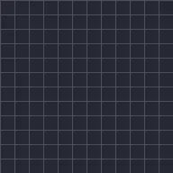

ड्रॉइंग प्रोग्रेस

फ्रीहैंड ड्रॉइंग को स्ट्रोक-दर-स्ट्रोक, या किसी शेप की आउटलाइन को शुरू से अंत तक खींचता है। इसे बनते देखने के लिए अंत को 0% से 100% तक कीफ़्रेम करें। फ़िल बंद और स्ट्रोक वाले शेप पर सबसे अच्छा काम करता है।
सेटिंग्स
| सेटिंग | प्रकार | रेंज | डिफ़ॉल्ट |
|---|---|---|---|
| शुरू | संख्या | 0% से 100% | 0% |
| अंत | संख्या | 0% से 100% | 100% |